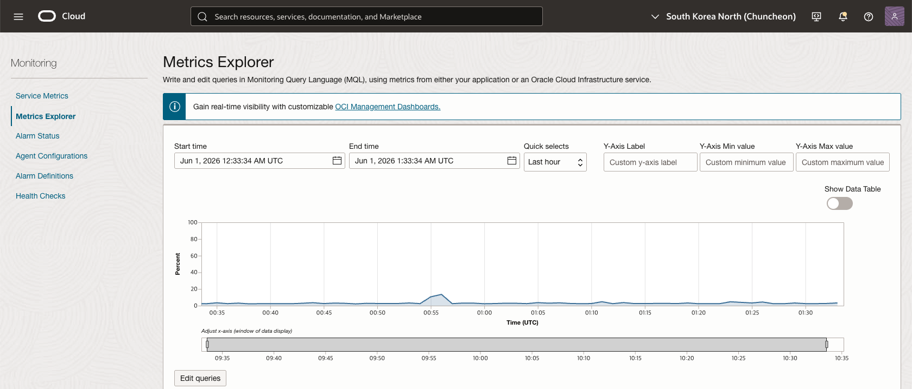
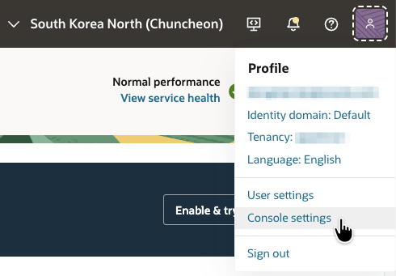
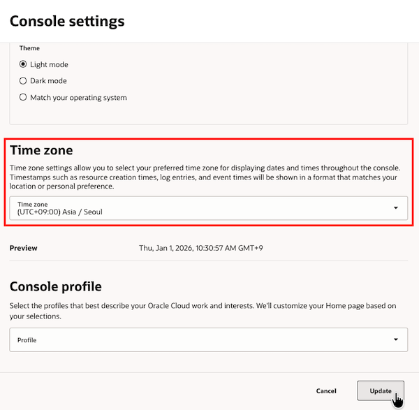
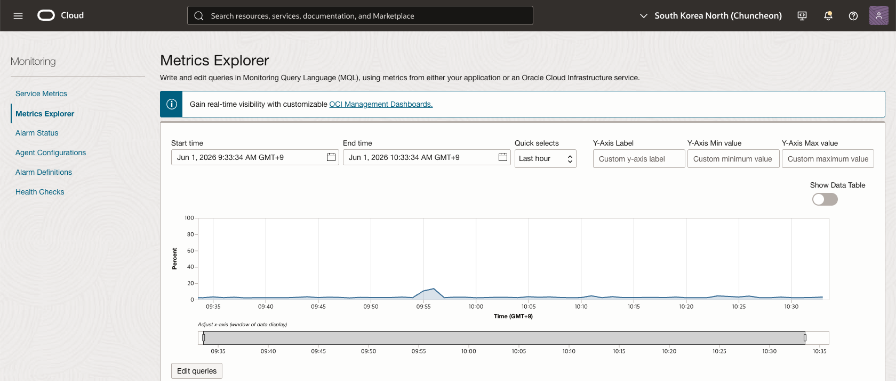

OCI Console - 커스텀 Time Zone 설정하기
커스텀 Time Zone 설정
OCI Console에서 표시되는 시간이 UTC 기준으로 한정되어 있었는데, 이제 표시되는 타임스탬프의 시간대(Time Zone)를 직접 선택할 수 있습니다. 여기에는 리소스 생성 시간, 로그 항목, 이벤트 타임스탬프 등이 포함된다고 합니다.
-
설정전

-
설정
- 오른쪽 상단 프로필 메뉴 → Console Settings → Time Zone


-
설정후

이 글은 개인으로서, 개인의 시간을 할애하여 작성된 글입니다. 글의 내용에 오류가 있을 수 있으며, 글 속의 의견은 개인적인 의견입니다.